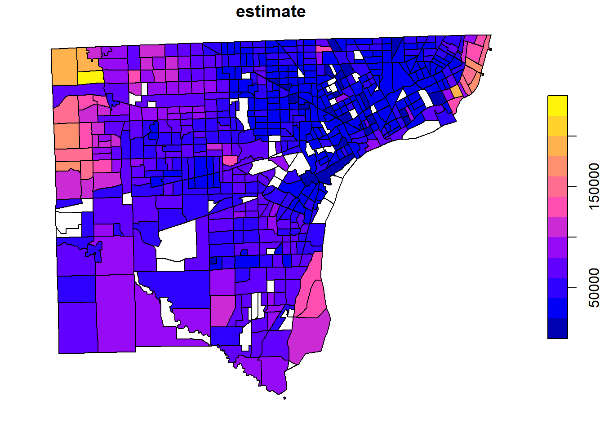

library(tidycensus)
library(tidyverse)Load Census tables via Tidycensus
This script provides a few examples of how to load ACS tables from https://data.census.gov using the Tidycensus package.
Note: A census API key is required to use tidycensus. Register for a Census API key at https://api.census.gov/data/key_signup.html. Once you’ve obtained a key, you can copy it to your .Renviron file by using the bls_set_key() function.
#sets bls API key (optional but encouraged)
bls_set_key("YOUR BLS API KEY HERE")Explore available variables in the ACS 5-year sample
Use the load_variables() function to load available tables derived from the 2021 ACS 5-year survey.
- See a full list of available Census tables at https://www.census.gov/programs-surveys/acs/technical-documentation/table-shells.html
# Show all available tables
acs_2021_variables <- load_variables(2021, "acs5", cache = TRUE)
acs_2021_variables# A tibble: 27,886 × 4
name label concept geography
<chr> <chr> <chr> <chr>
1 B01001A_001 Estimate!!Total: SEX BY AGE (W… tract
2 B01001A_002 Estimate!!Total:!!Male: SEX BY AGE (W… tract
3 B01001A_003 Estimate!!Total:!!Male:!!Under 5 years SEX BY AGE (W… tract
4 B01001A_004 Estimate!!Total:!!Male:!!5 to 9 years SEX BY AGE (W… tract
5 B01001A_005 Estimate!!Total:!!Male:!!10 to 14 years SEX BY AGE (W… tract
6 B01001A_006 Estimate!!Total:!!Male:!!15 to 17 years SEX BY AGE (W… tract
7 B01001A_007 Estimate!!Total:!!Male:!!18 and 19 years SEX BY AGE (W… tract
8 B01001A_008 Estimate!!Total:!!Male:!!20 to 24 years SEX BY AGE (W… tract
9 B01001A_009 Estimate!!Total:!!Male:!!25 to 29 years SEX BY AGE (W… tract
10 B01001A_010 Estimate!!Total:!!Male:!!30 to 34 years SEX BY AGE (W… tract
# ℹ 27,876 more rowsExamples
Demographic data
This example loads demographic data from the 2017-2021 ACS for counties in Michigan.
# This option will retrieve geographic data from the Census
options(tigris_use_cache = TRUE)
# Table B01001: Sex by Age
MI_demographics <- get_acs(table = "B01001",
geography = "county",
year = 2021,
state = "MI",
survey = "acs5")Getting data from the 2017-2021 5-year ACSMI_demographics# A tibble: 4,067 × 5
GEOID NAME variable estimate moe
<chr> <chr> <chr> <dbl> <dbl>
1 26001 Alcona County, Michigan B01001_001 10138 NA
2 26001 Alcona County, Michigan B01001_002 5127 38
3 26001 Alcona County, Michigan B01001_003 169 12
4 26001 Alcona County, Michigan B01001_004 176 40
5 26001 Alcona County, Michigan B01001_005 190 36
6 26001 Alcona County, Michigan B01001_006 132 12
7 26001 Alcona County, Michigan B01001_007 68 17
8 26001 Alcona County, Michigan B01001_008 28 20
9 26001 Alcona County, Michigan B01001_009 47 18
10 26001 Alcona County, Michigan B01001_010 110 24
# ℹ 4,057 more rowsMap of median household income in MI, by county
This example creates a map of median household income in Michigan from the 2017-2021 ACS, by county.
# Plot household income by county
MI_income <- get_acs(
geography = "county",
state = "MI",
variables = "B19013_001",
year = 2021,
geometry = TRUE,
)
plot(MI_income["estimate"])
Map of median household income for Wayne County, MI, by tract
detroit_income <- get_acs(
geography = "tract",
state = "MI",
county = "Wayne",
variables = "B19013_001",
year = 2021,
geometry = TRUE,
)
plot(detroit_income["estimate"])
Total income below poverty level in Rhode Island by gender, 2009–2021
This example defines function to load multiple years and multiple demographic groups for table b17001
# Poverty in Rhode Island: https://data.census.gov/table?q=B17001B
# Function to load multiple years of acs data
load_acs_tables <- function(x){
get_acs(geography = "state",
variables = c(total_count = "B17001_001",
count_income_below_poverty = "B17001_002",
count_income_below_poverty_level_male = "B17001_003",
count_income_below_poverty_level_female = "B17001_017"),
state = "RI",
year = x,
output = "wide") %>%
#create year variable
mutate(year = x)
}
#load 2009:2018 5yr datasets with map_dfr()
RI_Poverty_B <- map_dfr(2009:2021, load_acs_tables)
RI_Poverty_B# A tibble: 13 × 11
GEOID NAME total_countE total_countM count_income_below_povertyE
<chr> <chr> <dbl> <dbl> <dbl>
1 44 Rhode Island 1019380 497 118618
2 44 Rhode Island 1014029 440 123396
3 44 Rhode Island 1012044 459 129454
4 44 Rhode Island 1011137 430 133462
5 44 Rhode Island 1010872 463 137244
6 44 Rhode Island 1012806 364 143996
7 44 Rhode Island 1013455 398 144223
8 44 Rhode Island 1013916 310 140161
9 44 Rhode Island 1015923 402 136126
10 44 Rhode Island 1016029 462 133055
11 44 Rhode Island 1016506 463 125826
12 44 Rhode Island 1017028 481 117785
13 44 Rhode Island 1050314 707 118257
# ℹ 6 more variables: count_income_below_povertyM <dbl>,
# count_income_below_poverty_level_maleE <dbl>,
# count_income_below_poverty_level_maleM <dbl>,
# count_income_below_poverty_level_femaleE <dbl>,
# count_income_below_poverty_level_femaleM <dbl>, year <int>A more complex function to load multiple demographic groups
load_acs_tables2 <- function(x,y){
get_acs(geography = "state",
variables = c(total_count = paste0("B17001",y,"_001"),
count_income_below_poverty = paste0("B17001",y,"_002"),
count_income_below_poverty_level_male = paste0("B17001",y,"_003"),
count_income_below_poverty_level_female = paste0("B17001",y,"_017")),
state = "RI",
year = x,
output = "wide") %>%
#create variables to identify years and demographic groups
mutate(year = x,
group = y)
}
#create list of arguments to pass to function
crossargs <- expand.grid(x=2009:2021, y=LETTERS[1:9])
#load all data 2009 to 2021
RI_Poverty <- map2_dfr(crossargs$x, crossargs$y, load_acs_tables2)
RI_Poverty# A tibble: 117 × 12
GEOID NAME total_countE total_countM count_income_below_povertyE
<chr> <chr> <dbl> <dbl> <dbl>
1 44 Rhode Island 844002 2476 74676
2 44 Rhode Island 832540 2445 76711
3 44 Rhode Island 831102 2675 80691
4 44 Rhode Island 827707 2583 84578
5 44 Rhode Island 824245 3051 86232
6 44 Rhode Island 825456 2895 92849
7 44 Rhode Island 823532 2843 93988
8 44 Rhode Island 822275 3089 92245
9 44 Rhode Island 823518 3001 89596
10 44 Rhode Island 823420 2950 89282
# ℹ 107 more rows
# ℹ 7 more variables: count_income_below_povertyM <dbl>,
# count_income_below_poverty_level_maleE <dbl>,
# count_income_below_poverty_level_maleM <dbl>,
# count_income_below_poverty_level_femaleE <dbl>,
# count_income_below_poverty_level_femaleM <dbl>, year <int>, group <fct>See more examples from Tidycensus at https://walker-data.com/tidycensus/articles/basic-usage.html